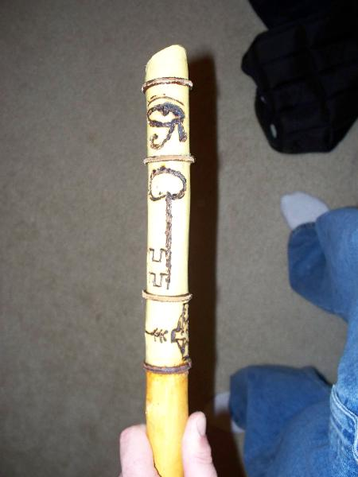

The tormented soul of our psychological thriller horror novel entitled The Flaming Page! desperately seeks to fight back against the invisible entities which hound him with fiendish affliction. Are they Spirits? Are they Space Aliens? Are they BOTH? Or are they just really insipidly, insidiously evil people? Bart Fitzgerald Chamberlain frantically struggles to escape from the perpetual nightmare his life has become. He tries to tell others, the innocent and unwary inhabitants of the picturesque neighborhoods of earth, that he has been abducted by sinister machine organism Space Aliens who use magic to achieve advanced technology, but no one is listening to Chamberlain. No one except, maybe, his neighbor's 17 year old daughter, Alexis. Living across the street with her mother and three older sisters, Alexis takes a sly interest in Chamberlain, who has just unceremoniously made it through his fiftieth birthday. Intelligent, open~minded and sensually gorgeous, Alexis listens to Chamberlain's warnings of doom and pleas for help. He wonders, since she is the only one who listens, if she may just be humoring his alarmist ravings out of pity, patronizing him with natural human compassion. And as if all this weren't enough, Bart Fitzgerald Chamberlain is living in a house which is reputed to be haunted! From this point onward, the reader is advised that what is to be found among the unsettling words of The Flaming Page! may result in a sensation of sneaking suspicion, a feeling of apprehensiveness which will follow one away from the pages of this Book. Continue reading at your own discretion! *~*~*~*~*~*~ THE FLAMING PAGE! ~*~*~*~*~* ` It begins ~* There's a junk yard and automotive maintenance and repair shop just outside the subdivision in which Chamberlain lives. Eddy's Salvage and Repair. One morning, after stopping at this local auto mechanic's for an oil change, Chamberlain is questioned by the owner, Eddy Simms, "What happened to you, Chamberlain? You know how many times I've talked to you about how important it is to keep the oil changed in this ole rustbucket of yours and here you ain't been around in a 'coon's age. Where you been hidin' ?" Eddy spits a long stream of tobacco juice from where he is leaning under the hood of Chamberlain's '78 Volkswagen Bug, wiping a drool of it from his chin with an oily finger and rubbing it off on his greasy, blue cover~alls. Chamberlain, squinting in the bright morning sunlight and frowning from the dust, heat and gasoline fumes hesitates, then with the air of a man resigned to his fate, responds to the mechanic's inquiry. ; "I was abducted by space aliens!" ; "Stop jerkin' me around man, seriously, where have you been?" ; "I'm dead serious, Eddy! I was taken aboard the MotherShip! From there, I was transported to a secret location within the Asteroid Belt. A small asteroid only a mile long and half a mile wide code named Fort Knox. It's where they conduct their nefarious experiments upon their live human subjects. Hellish behavior modification. Painful subliminal messaging. Agonizing alteration of DNA. It's all done there, 24/7, round the clock. The abductions from Earth always take place at night. And it's always night someplace on Earth. The screams! How the screams echo through the chambers of the asteroid lab facility! The screams were unbearable and the pain of the probes was worse! They have technologies you wouldn't believe. They are capable of triggering and activating latent and recessive genes. The mutations. The metamorphoses which the helpless victims are made to endure. Do you know how I know there is no God? Because no creator would allow its creations to have to undergo such gruesome tortures. I actually witnessed these atrocities first hand! I saw them transform a plumber named Phil into a Lycanthrope! Those miserable mind~suckers implanted me with a tracking device! It continually transmits my vital signs and other metabolic stats via a subspace datalink. The Underground, they call it. Think I'm crazy??. Well think again!! Think you're safe?? Well think again!! Everybody is crazy!! No one is safe!! We are all members of the Underground Network! The Global Domination Conspiracy of the proletariat has been realized! Remember 1969? The Gregorian Calendar, ARPA, the moon landing, ritualistic suicide of religious cults, the death of Judy Garland, the formation of Wal*mart! They changed their five point star to a stylized "spark" with six arms! Check the Logo! The GEIKO Gecko! That's what they look like! Little green men with huge, bulging, dark eyes and toothless mouths stretched in a perpetual maniacal grin! By bombarding us with lizards on TV they are desensitizing us so that we won't experience high levels of shock resulting in world wide panic when they completely take over! They are full well expecting a certain degree of recoil, but they don't want a stampede on their hands. The Advanced Research Projects Agency! They aren't coming.............THEY ARE HERE!!!! !!!!!!!!!!!!!!!!! ################ little miss muffet sat on a tuffet eating her curds and whey when out from afar they came from the stars to conquer the Milky Way |

Yvette's ~*
| Yvette's treasures the opportunity to serve you ~* |
| Yvette's cares about YOU !! ~*~*~*~*~* Yvette's wants YOU to be HAPPY !! ~* |
Thank You for visiting
Yvette's ~*
Established 1980
| Yvette's has a Passion for Fashion !! ~* |

TAKE ME TO YOUR LEADER
| this Yvette's Page has been visited times !! ~* |
| this is page 1, the introduction of THE FLAMING PAGE! |


Bart Fitzgerald Chamberlain
| Little Miss Muffett sat on a tuffett eating her curds and whey when out from afar they came from the stars to conquer the Milky Way |